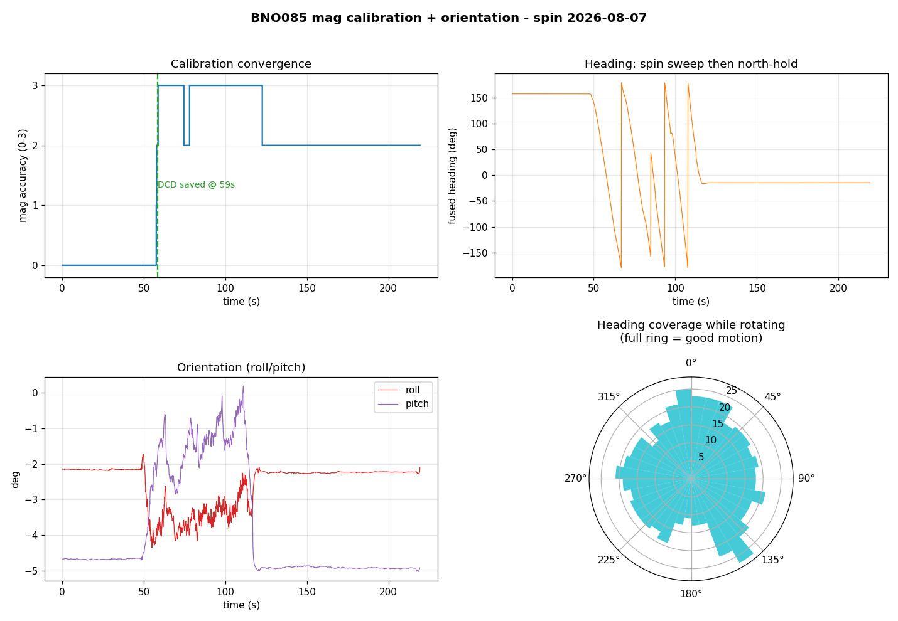

PLRS-IMU

This is my main project on UBC Sailbot. I've written 173 of the 175 commits, and the codebase is about 17,000 lines across C++ firmware, Python simulation, and tests. The goal is heading accuracy within 2 degrees by fusing an IMU and dual-antenna GNSS through an Extended Kalman Filter.
The hardware
The MCU is a Raspberry Pi RP2040 (Pico), with RP2350 support for the newer boards. For GNSS I use a Septentrio mosaic-go H, the dual-antenna variant that gives heading from the baseline between two antennas.
The IMU was originally an Xsens MTi-3. That sensor died, and I replaced it with a BNO085. I wrote a complete SHTP/SH-2 protocol layer from scratch for it (the Xbus protocol layer for the Xsens was already done). Here is a magnetometer calibration capture from the BNO085, showing the heading sweeping through all directions and the coverage rose filling out:

The PCB is my own design in KiCad. It carries the RP2040 (or RP2354), the IMU, a debug probe header, and overvoltage protection.
The filter
The firmware runs FreeRTOS on the RP2040. I wrote it in C++23, and all the
protocol layers (Xbus, SHTP/SH-2, SBF/NMEA) compile and run tests under
plain g++ -std=c++23 on the host. That makes iteration much faster than
flashing to hardware every time.
The EKF started as a 2-state filter (heading + gyro-Z bias) and grew to 7 states: heading, roll, pitch, 3-axis gyro bias, and magnetometer offset. Each expansion was driven by a concrete problem.
Heel coupling. The original filter integrated body-Z gyro directly into heading. That works when the boat is level, but the moment it heels, body-Z gyro is not pure yaw rate anymore. A boat at 30 degrees of heel, sailing straight, shows a non-trivial gyro-Z reading from pitch-rate coupling. The filter integrates that into heading, and the drift looks like a slow yaw bias. GNSS keeps pulling it back, so it does not catastrophically fail; it just quietly degrades. This was the bug the previous sailbot IMU had. I fixed it by promoting roll and pitch into the EKF state and projecting the body gyro through the ZYX Euler kinematic matrix before integrating.
Gimbal singularity. Near 90 degree pitch the heading kinematics blow up
(sec(pitch) goes to infinity). A boat never trims there, but bench handling and
knockdowns can. Without a guard, the covariance goes to NaN and never recovers.
I clamped the pitch feeding the rate maps and added a heading_trustworthy
flag that the rudder controller checks before steering.
Float32 P degradation. On the RP2040 everything is single-precision. I found that during long GNSS outages the covariance matrix diagonal could grow large enough that the heading and mag-offset sigma estimates lost precision. The fix is a sigma cap that prevents the covariance from drifting into the range where float32 arithmetic stops being meaningful.
P symmetry. After each measurement update the covariance matrix can pick up small asymmetries from floating-point rounding. Over many updates these accumulate and the filter diverges. I added a re-symmetrize step after every update.
GNSS bring-up
Getting the Septentrio mosaic-go H to produce heading turned into a multi-week
debugging effort. The first unit tracked satellites on the main antenna but
reported zero on the aux, even in clear sky. I wrote a diagnostic script
(mosaic_diag.py) to parse MeasEpoch, AuxAntPositions, AttEuler, and RxError
blocks. The script showed AUX1 tracking 0 to 1 satellites while MAIN tracked
27 to 28. The unit went back as an RMA.
The replacement unit was different but still broken. It tracked satellites on both antennas (3 to 6 on aux, 14 to 18 on main), but the attitude solve still failed. I dug into the MeasEpoch data and found the real problem: zero common satellites between the two antennas. Attitude needs double-differenced observations, which need the same satellites visible on both antennas at the same time. My diagnostic script had been counting only Type1 sub-blocks and missing the Type2 sub-blocks where the aux antenna reports most of its measurements. Once I fixed the parser, the common count jumped to 26, and heading locked at 241 degrees with 0.15 degree stability.
The Septentrio hardware manual is explicit that ANT_2 is AC-coupled and unprotected, unlike ANT_1. I suspect the first unit was damaged by hot-plugging the SMA while the 5V bias was live. I added a procedure: power the receiver down before connecting antennas, discharge each coax before mating.
GNSS outage handling
The question that started a whole investigation: what happens when GNSS drops out? The magnetometer should hold heading, but how well?
I ran a full audit. The filter already fails safe: the rudder gates steering
on heading_valid (sigma under 5 degrees, pitch under 80 degrees). In
simulation, a GNSS outage pushes heading sigma past 5 degrees within about
16 seconds, so the rudder stops trusting the heading before any large error
builds. The large drift that happens during a long outage (tens of degrees)
occurs entirely after heading is already flagged invalid.
The real lever is usable coast time. The loose q_offset that correctly
absorbs magnetometer wander during normal operation is the same parameter that
lets confidence decay in 16 seconds. I added an opt-in q_offset_outage that
pins the mag offset during a GNSS gap: with a clean magnetometer, heading holds
under 1 degree for a full 5-minute outage and stays valid. With a dirty
magnetometer, pinning makes the filter confidently wrong, so the knob defaults
to off and gates on a characterized mag.
EKF holding heading through a GNSS outage:

Same scenario at 20 degree heel with a body-Y gyro bias:

Peak heading error across the full attitude envelope during a 30 s outage:

The simulation
The same C++ EKF code that ships on the RP2040 is bound into Python via nanobind. I can run the filter offline against synthetic sensor data, and the tuning values transfer faithfully because it is literally the same compiled filter running in both environments. The decision to use FFI instead of reimplementing the filter in Python was the first important call. If the Python filter differs from the C++ filter by a single ULP per step (different float promotion, a numpy summation in a different order), Q values picked offline do not transfer.
The sim has timeseries plots (truth vs. estimate with 1-sigma bands), a 3D boat visualization with truth and EKF-estimate hulls overlaid, and the drift sweep heatmap above. A live telemetry monitor reads real-time UART output from the board and plots attitude, heading, and GNSS status.
The PCB
PCB front:

PCB back:

The board connects to the Septentrio GNSS module and talks to the rudder controller over a COBS-framed serial link that I designed for the com-module-firmware.
Repositories
- Firmware and simulation: github.com/UBCSailbot/PLRS-IMU
- PCB: github.com/georgesleen/polaris-imu-pcb